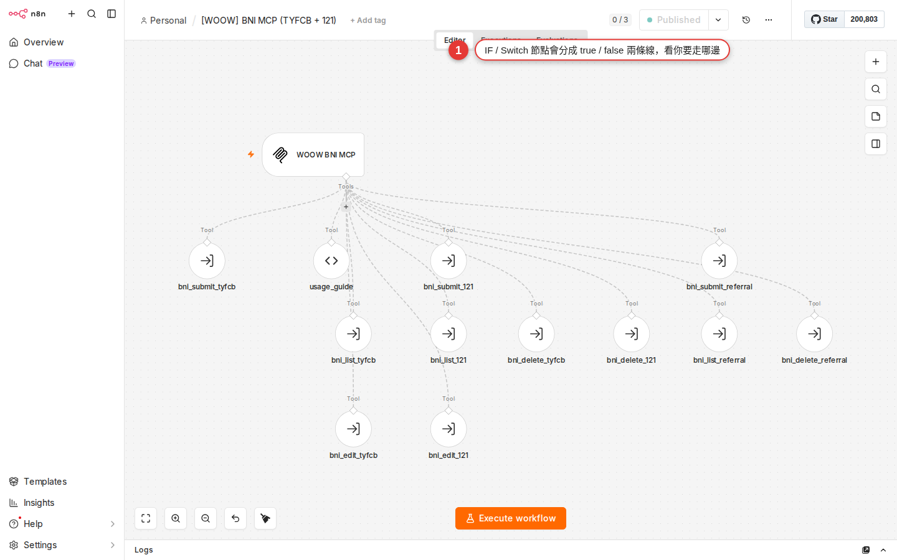

IF / Switch: conditional branching
A workflow does not do the same thing every run. "Notify the manager only when the amount is over 1,000", "email a thank-you note only to VIP customers", "save the data only when the consent box is ticked" — n8n gets this "read the data, then decide which way to go" ability from two nodes: IF (one of two) and Switch (one of many). This chapter lays out how the two differ, how you set each one up and where people trip, so that next time you meet a "sometimes A, sometimes B" requirement the answer comes to you on its own.
Why you need conditional branches
Up to Chapter 14 you can use {{ $json.amount }} to push data from one node into the next — useful, but that is only passing it along untouched. Almost every real automation has a fork in it:
- An order arrives: if the amount is over 1,000, notify the manager; everything else just goes on the daily list.
- A customer list comes in: VIPs go down the "thank-you email + a new Slack channel" path, ordinary customers only get the auto-reply.
- A form is submitted: store it in the database only if the terms box was ticked; if it was not, send a "please fill it in again" email.
- A system alert: critical makes a phone call, warning posts to Slack, info only writes a log line.
This "read the data, then pick a path" logic is called conditional branching. Programmers write it as if / else or switch / case; in n8n you write no code at all — you drop in an IF node or a Switch node and draw the connections downstream visually: data comes in, the node decides, and the item leaves through the top or the bottom (IF) or through a numbered output (Switch).
IF vs Switch: which one to use when
Both nodes do the same job — decide, then route. Picking the wrong one breaks nothing, but the right one keeps the canvas much cleaner. One line each:
| Characteristic | IF node | Switch node |
|---|---|---|
| How many outputs | Always two: true (top), false (bottom) | As many as you define (Rules mode has no documented hard limit; 3–10 is common in practice. In Expression mode Number of Outputs decides) |
| The question it answers | One yes/no (for example, "is the amount > 1000?") | One field with several possible values (for example, "is tier gold, silver or bronze?") |
| Mental model | A program's if / else |
A program's switch / case; like an elevator, you press a floor and it takes you there |
| How you write the condition | Add several conditions and combine them with AND / OR | Each output gets its own condition (Rules mode), or one expression decides which number it goes to (Expression mode) |
| How to choose | When there are only two paths: yes or no | Three paths or more, or an obvious category (tier, status, source) |
Hands-on: add your first IF node
Take a concrete case: an order over 1,000 goes down the "notify the manager" path, everything else goes to the "daily log" path. Note: the English edition uses a location-neutral sample customer. Assume your upstream node (a Webhook, Google Sheets, Airtable) already hands the order down as JSON like { "amount": 1500, "customer": "Example Stationery Store" }.
-
Add an IF node to the canvas
Click the + icon to the right of the upstream node (or press Tab on an empty spot) to open the nodes panel → type
ifin the search box → click If (under the Flow category). The node drops onto the canvas, already connected upstream. -
Set the first condition
Double-click the IF node to open the panel on the right. You will see a Conditions block with one empty comparison row. Fill in its three fields, left to right:
- Value 1 (the left side): click the field to switch to Expression mode and write
{{ $json.amount }}— that pulls theamountfield from upstream. - Operator (the middle): pick the type
Numberin the left dropdown first, thenis greater thanon the right (the official name in the v2 IF node, notlarger). - Value 2 (the right side): enter
1000(a plain number, no quotes).
- Value 1 (the left side): click the field to switch to Expression mode and write
-
Watch two output lines appear on the right of the node
Once the condition is set, the IF node splits into two outputs on its right: true on top (green) and false below (red). Those are the two paths you can draw connections from.
-
Wire each output to a different downstream node
Drag a connection out of the true dot into your "notify the manager" node (Slack posting to the #manager channel, say). Drag another out of false into the "daily log" node (Google Sheets Append Row, say). The canvas now forks into two paths.
-
Save, then test with Execute Workflow
Ctrl+S to save. Click Execute Workflow at the top right of the canvas. When the IF node finishes it marks the output it took with a green border — the order amount is 1500 > 1000, so it should take true, and seeing the Slack node light up too means it worked.
-
Test once more with data that should go false
Change the upstream mock data to
amount: 800and run it again. This time only the Google Sheets Append path should light up and the Slack path should stay quiet. The IF is only really verified once you have tested both paths.
The IF node's four data-type conditions
The IF node's Operator dropdown has two levels: pick the data type on the left, and the matching comparison operators appear on the right. Picking the right type matters — get it wrong and the condition looks right but always comes out false, the number-one thing beginners trip over.
| Type | Common operators | What goes in Value 2 | Example |
|---|---|---|---|
| String | exists / does not exist / is empty / is not empty / is equal to / is not equal to / contains / does not contain / starts with / does not start with / ends with / does not end with / matches regex / does not match regex | A string (an expression is allowed) | Value 1 {{ $json.status }}, Operator is equal to, Value 2 paid |
| Number | exists / does not exist / is empty / is not empty / is equal to / is not equal to / is greater than / is less than / is greater than or equal to / is less than or equal to | A plain number (no quotes) | Value 1 {{ $json.amount }}, Operator is greater than, Value 2 1000 |
| Boolean | exists / does not exist / is empty / is not empty / is true / is false / is equal to / is not equal to | Nothing at all for is true / is false; for is equal to, enter true or false |
Value 1 {{ $json.consent }}, Operator is true |
| Date & Time | exists / does not exist / is empty / is not empty / is equal to / is not equal to / is after / is before / is after or equal to / is before or equal to | An ISO date string or an expression (for example {{ $now }}) |
Value 1 {{ $json.createdAt }}, Operator is after, Value 2 2026-01-01 |
There are also Array (with contains, length equal to, length greater than) and Object (only exists / does not exist / is empty / is not empty), which come up less often, so skip them for now. Note that Date & Time has no is between operator — to test "between two times" you write two conditions (is after A and is before B) and combine them with AND.
"1500" and you picked Number → is greater than → 1000 — the result is false every time. The string 1500 is not the number 1500, and n8n does not convert it for you. The fix: change Value 1 to {{ Number($json.amount) }} to force the type, or convert it upstream with an expression or a Set node. Whenever a condition should match yet goes false, this is nearly always why.Combining conditions: AND / OR
One IF node can hold several conditions, and you decide how they combine. Once you add a second condition row, an AND / OR dropdown appears between the two rows (the UI calls it exactly that; there is no Combinator label), with two options:
| Combinator | What it means | When to use it |
|---|---|---|
| AND | The official wording is "Keep data when it meets all conditions" — every condition has to be true for the result to be true | "Notify only when the amount is large and the payment status is paid" |
| OR | The official wording is "Keep data when it meets any of the conditions" — one condition being true is enough | "Notify the manager when the customer is a VIP or the order is over 5,000" |
Example: amount over 1,000 AND payment status is paid
The requirement is "a big amount is not enough — the money has to have arrived before the manager is notified". Open the IF node and add two conditions:
- Condition 1: Value 1
{{ $json.amount }}, OperatorNumber is greater than, Value 21000 - Condition 2: Value 1
{{ $json.status }}, OperatorString equals, Value 2paid - Combine:
AND
Both have to hold before the item goes true. If status is pending, even an amount of 5,000 goes false.
Example: VIP customer OR large order
The requirement is special attention — either one on its own sends the item down true:
- Condition 1: Value 1
{{ $json.tier }}, OperatorString equals, Value 2vip - Condition 2: Value 1
{{ $json.amount }}, OperatorNumber is greater than, Value 25000 - Combine:
OR
{{ $json.a && ($json.b || $json.c) }}, and set Operator to Boolean is true. The second is tidier, but you need a little JS.The Switch node in detail: two modes
Open the Switch node and the first thing it asks is Mode: Rules or Expression. This is the biggest difference between Switch and IF, and the two modes ask you to think in completely different ways.
Mode 1: Rules (the one you will use most)
It works like a stack of IF nodes — every Rule has its own condition (the same operator system as the IF node), and an item leaves through the output of whichever rule it matches. To add one: click Add Routing Rule in the panel, and you get one more output (another dot on the right of the node).
Example: three customer tiers, each handled differently downstream. The item coming from upstream is { "tier": "gold", ... }. Set the Switch node up like this:
- Rule 0: Value 1
{{ $json.tier }}, OperatorString equals, Value 2gold→ output 0 goes to "send a thank-you email + notify sales" - Rule 1: Value 1
{{ $json.tier }}, OperatorString equals, Value 2silver→ output 1 goes to "send a discount voucher" - Rule 2: Value 1
{{ $json.tier }}, OperatorString equals, Value 2bronze→ output 2 goes to "send the standard welcome email"
Below the rules sits a Fallback Output dropdown with three official options: None (the default: an unmatched item is dropped), Extra Output (an extra output that catches unmatched items — the common choice), Output 0 (an unmatched item leaves through the same output as the first rule). When you want an "unclassified" path downstream, pick Extra Output.
There is also a Send data to all matching outputs toggle (off by default): with it off, an item goes down only the first rule it matches; with it on, an item that matches two rules is sent down both — turn it on carefully, because items then get duplicated across branches.
Mode 2: Expression (advanced)
Write one expression that returns which output number to take (counting from 0). It is shorter than Rules mode, but you have to be comfortable with expressions.
The same example in Expression mode:
{{ { "gold": 0, "silver": 1, "bronze": 2 }[$json.tier] }}It reads as a lookup table: tier gold takes output 0, silver output 1, bronze output 2. The number it returns picks the output line on the right of the canvas, counted from the top. Set the Number of Outputs field first (3 here) so the node has that many lines to connect.
Common cases at a glance
Here are the common IF / Switch uses in one table. Find the row that matches your requirement and copy it as-is:

| Situation | Which node | Condition | How to wire the outputs |
|---|---|---|---|
| A new form arrives → store it in the sheet only if consent was ticked, otherwise send the "please fill it in again" mail | IF | Value 1 {{ $json.consent }}, Operator Boolean is true |
true → Google Sheets Append; false → Gmail Send Message |
| Tiered order notifications: <1000 the assistant, 1000-5000 the team lead, >5000 the manager | Switch (Rules) | Rule 0 amount < 1000, Rule 1 two conditions with AND: amount >= 1000 and amount <= 5000, Rule 2 amount > 5000 (the Number operators have no is between, so it takes two conditions) |
One Slack node on each, every one posting to a different channel |
| Gmail Trigger receives mail → route it into different folders by the sender's domain | Switch (Rules) | Value 1 {{ $json.from.split('@')[1] }}, one String equals rule per domain |
Each one goes to a Gmail Add Label or Move Message |
| System alerts: critical makes a phone call, warning posts to Slack, info only writes a log line | Switch (Expression) | Expression: {{ { critical: 0, warning: 1, info: 2 }[$json.level] }} |
output 0 → HTTP Request to the phone API; output 1 → Slack; output 2 → HTTP Request that writes the log |
| Notify the manager only when order status = paid and the amount is > 1000 | IF (several conditions, AND) | Two conditions: status equals paid, amount > 1000; Combine AND | true → Slack notifies the manager; false → nothing connected (no action) |
A webhook receives a payload → a different path per event_type |
Switch (Rules) | One event_type string per rule | Each goes to its own chain of handling nodes; remember to turn the fallback on and wire an "unknown event" alert to it |
IF inside IF: nesting works, but keep it shallow
n8n does not stop a branch from branching again — a Switch below the IF's true output, and another IF below one of that Switch's outputs, are both legal. Visually, though, you end up with forks everywhere, and a few months later even you will struggle to read it.
When nesting is safe
- Two levels at most, each of them simple (an IF for VIP first, then a Switch by country on the VIP path) — the canvas is still readable.
- The downstream work ends after two or three steps instead of running on into a long chain.
When to pull it into a sub-workflow
- Three levels of nesting or more — the canvas turns into a tree diagram that no one can follow by eye.
- The same decision shows up in several workflows ("is this customer a VIP") — pull it into a sub-workflow and one edit covers them all, as Chapter 19 explains.
- One branch has more than 5 nodes below it — that branch is a small workflow of its own, and it is easier to pull out and test on its own.
Common IF / Switch pitfalls
A branch that does not fire, goes the wrong way or refuses to split — work down the table below and you can usually fix it yourself.
| Symptom | Likely cause | How to fix it |
|---|---|---|
| "Both branches ran" | It cannot happen. IF is exclusive: each item goes either true or false, never both. Both sides light up green because several items came in from upstream, some of them going true and some false, and each downstream path got its own share. | Click the IF node and read the item count on each output; the two should add up to the upstream total |
| "The condition should match, yet it always goes false" | The data type does not match the operator type (the data is the string "1500" and you picked Number is greater than) |
Convert in Value 1: {{ Number($json.amount) }}, {{ String($json.status) }}; or convert it upstream with a Set node |
| "Some items disappear in the Switch" | Those items matched no rule and you never turned on Fallback Output, so n8n dropped them | Change the Fallback Output dropdown in the panel from None to Extra Output; the node grows one more output, which you wire to an "unclassified" node (Slack notifying you, or a row in a sheet) |
| "I want to rejoin the branches so the downstream is written once" | A perfectly normal requirement, but it needs a Merge node | Connect the end of both branches to the same Merge node (Chapter 16 is a whole chapter on rejoining) |
| "The Switch in Expression mode says the output number is invalid" | The expression returned a number outside the Number of Outputs range (3 outputs are set, but it returned 5) | Give the expression a lookup table or a clamp as a floor: {{ ({a:0,b:1,c:2}[$json.type]) ?? 0 }}, so anything unmatched goes to 0 |
| "The IF node opens with no Conditions block, just an empty panel" | A version difference, or the node did not finish loading | Delete the node and add it again; or close the canvas tab and reopen the workflow |
| "String contains does not match, even though the text is plainly in there" | Case sensitivity (contains is case-sensitive), or whitespace around the field |
Put {{ $json.text.toLowerCase().trim() }} in Value 1, and use lowercase in Value 2 too |
| "A Date is before/after test always goes false" | Value 1 holds a date as a string, not a Date object; n8n converts it sometimes and sometimes not | Change Value 1 to {{ DateTime.fromISO($json.createdAt) }} to convert it explicitly into a Luxon DateTime |
FAQ
After an IF I want both paths to carry on with the original flow. How do I write that?
tag = "vip" or "normal"), then let the downstream nodes work from that field. The data flow stays in one piece and you keep the classification.Do too many IF nodes in one workflow slow it down?
The condition is too complex to build in the UI. What do I do?
Boolean is true. For example: {{ $json.amount > 1000 && ($json.tier === "vip" || $json.paid) && !$json.blocked }} — mixed logic of the A AND (B OR C) AND NOT D kind fits on one expression line. Something clear and readable is still better, of course; when it really is complicated, move it into a Code node that returns { shouldNotify: true }, and let the IF test {{ $json.shouldNotify }}.Does one IF run count as an execution? Does it eat my quota?
What is the maximum number of Switch outputs? Can an IF have three?
Can I rejoin the paths after an IF / Switch?
Append or Combine mode to state exactly how they join is safer.Does the top-to-bottom order of the Switch rules matter?
The Switch node does have a Send data to all matching outputs toggle (under Options, off by default): with it on, an item is sent everywhere it matches and several rules can receive it — order then no longer decides whether a rule fires, though it still decides the output numbering you see. To stop caring about order entirely, write the rules so they exclude each other (
amount >= 100 AND amount < 1000, amount >= 1000 AND amount < 5000, amount >= 5000, building each range from two conditions plus AND; Number has no is between operator).Can an IF condition read data from two nodes back?
{{ $node['Node Name'].json.field }} — the cross-node syntax Chapter 14 taught you. For example: {{ $node['Webhook'].json.body.customer_id }}. Reading another node inside a condition is common (the current node holds the result of a customer lookup, but you want to decide on the original payload the webhook was triggered with). Note that node names are case-sensitive, and spaces inside them have to be kept.